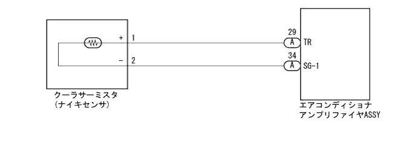
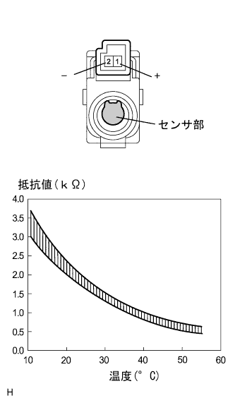
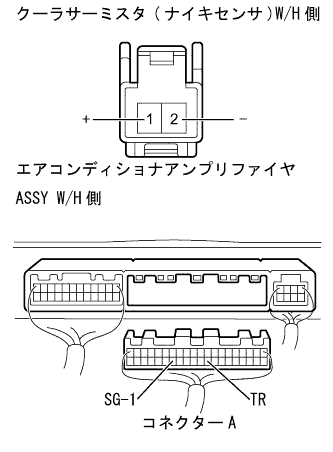

DTC B1411/11 Room Temperature Sensor Circuit Malfunction |
| DTC No. | Diagnosis Description
| Inspection Area |
|---|---|---|
| B1411/11 |
|
|

| Step 1 | Read TaSCAN Data (Room Temperature Sensor) |
Using SST (TaSCAN), inspect the ECU Data Monitor by following the screen instructions.
| Item Name [Item Symbol] | Condition | Reference Value |
|---|---|---|
| Room Temperature Sensor [THI] | - |
|
| Result | Proceed to |
|---|---|
| Does not display same value as cooler thermistor (room temperature sensor) ambient temperature | A |
| Displays same value as cooler thermistor (room temperature sensor) ambient temperature | B |
|
| ||||
| A | |
| Step 2 | Inspect Cooler Thermistor (Room Temperature Sensor) |
Disconnect the cooler thermistor (room temperature sensor) connector.
 |
Using SST (Toyota electrical tester), measure the resistance between the terminals of the connector.
| Tester Connection (Terminal Symbol) | Inspection Condition [Ambient Temperature] | Standard |
|---|---|---|
| 1(+) - 2(-) | 10°C | 3.00 to 3.73 kΩ |
| 15°C | 2.45 to 2.88 kΩ | |
| 20°C | 1.95 to 2.30 kΩ | |
| 25°C | 1.60 to 1.80 kΩ | |
| 30°C | 1.28 to 1.47 kΩ | |
| 35°C | 1.00 to 1.22 kΩ | |
| 40°C | 0.80 to 1.00 kΩ | |
| 45°C | 0.65 to 0.85 kΩ | |
| 50°C | 0.50 to 0.70 kΩ | |
| 55°C | 0.44 to 0.60 kΩ | |
| 60°C | 0.36 to 0.50 kΩ |
|
| ||||
| OK | |
| Step 3 | Inspect Wire Harness and Connector (Cooler Thermistor (Room Temperature Sensor) - Air Conditioner Amplifier Assembly) |
for reference.Disconnect connector A of the air conditioner amplifier assembly.
 |
Using SST (Toyota electrical tester), measure the resistance between the connector terminals of the vehicle wire harness. (For Terminals of ECU, see)
| Tester Connection (Terminal Symbol) | Condition | Standard |
|---|---|---|
| 1(+) - A29(TR) | Always | Below 1 Ω |
| 2(-) - A34(SG-1) | Always | Below 1 Ω |
|
| ||||
| OK | ||
| ||